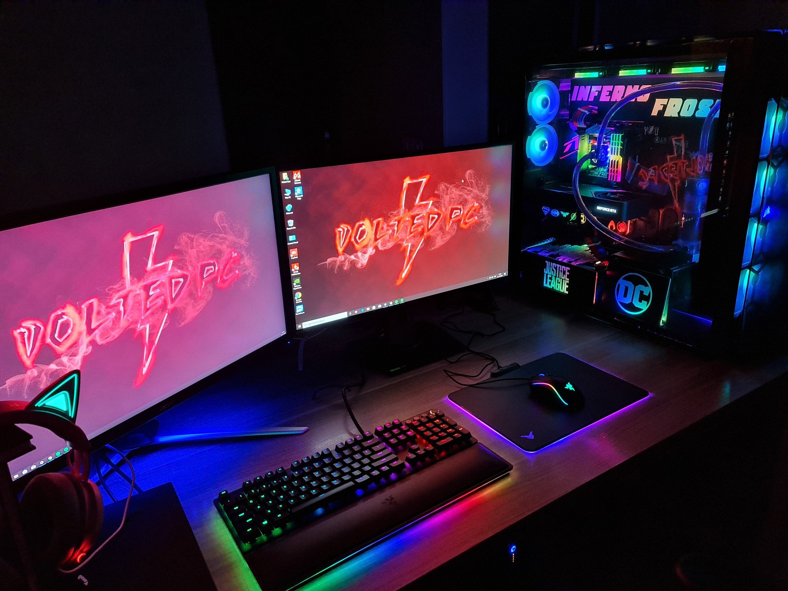
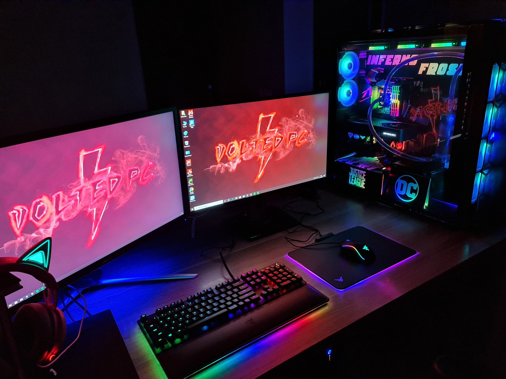

A newly launched website dedicated to PC building has just gone live, offering a one-stop solution for all your custom computer needs. This platform caters to both beginners and enthusiasts, providing a seamless experience for selecting and assembling components. Users can browse an extensive catalog of processors, graphics cards, motherboards, RAM, storage devices, cooling systems, and cases from top brands, complete with detailed specifications and compatibility checks. The site also features pre-designed builds tailored for gaming, productivity, and creative work, alongside step-by-step assembly guides and expert tips. With competitive pricing, intuitive navigation, and a customer support team ready to assist, this website is set to become a go-to destination for PC enthusiasts.
If you’re passionate about building your dream PC or simply exploring the exciting world of computer components, the newly launched Build Your PC Hub is here to revolutionize your experience. This innovative platform has been designed to cater to beginners and seasoned tech enthusiasts alike, offering an all-in-one solution for discovering, selecting, and purchasing PC components that perfectly match your needs. Whether you're assembling a high-performance gaming rig, a robust workstation for demanding creative tasks, or a budget-friendly system for casual use, this website has you covered.
Build Your PC Hub is more than just an online store; it’s an ecosystem that simplifies every aspect of PC building. The site boasts a vast catalog of components, from cutting-edge CPUs by brands like AMD and Intel to the latest graphics cards from NVIDIA and AMD. The platform doesn’t just stop at these key parts—it features an extensive selection of motherboards, RAM, SSDs, cooling systems, power supplies, and chassis in a variety of sizes and designs. Every product page is enriched with detailed specifications, real-world benchmarks, and compatibility guides, helping users make informed decisions effortlessly.
One of the standout features of the site is the PC Building Simulator, an interactive tool that lets users virtually assemble their PC. This feature ensures all chosen components are compatible, avoiding costly mistakes. For instance, users can drag and drop components to a virtual build, instantly confirming whether a selected motherboard fits into a chosen case or whether the power supply delivers enough wattage for the build. It’s a game-changer for first-time builders who might be intimidated by the technicalities of custom PC assembly.
The website also includes a robust Build Guide Section, offering tutorials and step-by-step instructions. Whether you need guidance on installing a CPU cooler or advice on cable management, the guides cater to every aspect of PC building. Each guide includes images, videos, and expert tips, ensuring even complex procedures are accessible to everyone. The addition of a forum and community section allows users to share their builds, seek advice, and exchange ideas with a growing community of PC enthusiasts from around the globe.
For those looking to save time, Build Your PC Hub offers pre-configured builds tailored to specific needs. You can browse categories like "Budget Gaming PC," "4K Video Editing Rig," or "Ultra High-End Gaming Beast." Each build comes with a detailed breakdown of components, pricing, and upgrade suggestions, giving users a perfect starting point for customization.
To make shopping as seamless as possible, the website includes an intuitive filtering system. Users can filter products by price, brand, performance metrics, and user ratings. The built-in price comparison tool ensures users get the best deals by automatically comparing prices across trusted retailers. Additionally, seasonal discounts, exclusive bundles, and a loyalty program reward customers with significant savings, making premium builds more accessible.